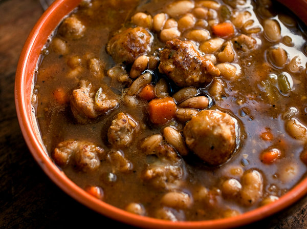

2 tablespoons extra virgin olive oil, more for serving
1 pound sweet Italian sausage, sliced 3/4-inch thick
1 tablespoon tomato paste
½ teaspoon ground cumin
2 medium carrots, finely diced
2 celery stalks, finely diced
1 onion, chopped
2 garlic cloves, finely chopped
1 pound dried Great Northern beans, rinsed and picked through
2 teaspoons kosher salt, or to taste
2 thyme sprigs
1 large rosemary sprig
1 bay leaf
2 teaspoons balsamic vinegar, more for serving
½ teaspoon ground black pepper, more to taste

Steps
Heat the oil in a large stockpot over medium-high heat. Add the sausage and brown until cooked through, about 7 minutes. Using a slotted spoon, transfer to a plate lined with a paper towel.
Add the tomato paste and cumin to the pot. Cook, stirring, until dark golden, about 2 minutes. Add the carrots, celery, onion and garlic. Cook, stirring, until the vegetables have softened, about 5 minutes. Stir in the beans, 8 cups water, salt, thyme, rosemary and bay leaf. Turn the heat up to high and bring to a boil. Then reduce heat to low and simmer gently until the beans are tender, about 2 hours, adding more water if needed to make sure the beans remain submerged.
When the beans are tender, return the sausage to the pot. Simmer for 5 minutes. Stir in the vinegar and pepper. Taste and adjust seasoning. Ladle into warm bowls and serve drizzled with additional vinegar and olive oil.
Notes
Good stuff. Comfort food. Made a while ago, don’t recall modifications.